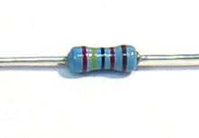
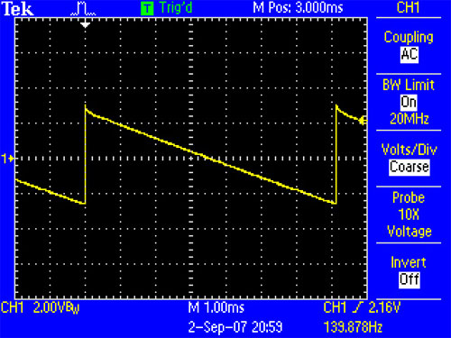

The first section of the main board to be assembled is the VCO (voltage controlled oscillator). This section converts a logarithmic voltage into a scaled oscillation. The relationship between the voltage and oscillation is called "1V/octave" because every 1V increase corresponds to a 1 octave increase in sound. For example, low C (65.4Hz) is generated by 2.0V, middle C (130.8Hz) is generated by 3.0V, and high C is generated by 4.0V.
- Be sure not to confuse the 2SC536, 2SA733 and 2SK30 transistors, or the 2SC1583 and 2SC2291 matched pairs: they look similar. The PCB drawings of the 2SK30 show a filled in transistor, the drawing of the 2SA733 is hollow with a line through it, and the 2SC536 drawing is hollow.
- The resistors, thermistors, and non-electrolytic capacitors have no polarity. This is not true for the diodes, transistors, electrolytic capacitors, and ICs. Putting them in backwards can destroy them.
- Both sides of the jumper J4 have a "1" printed next to the first pin, make sure that you have correctly corresponding pins connected.
- Don't forget that VR2 and SW1 are soldered on the top, opposite side of all the components.
- Disconnect power to solder, then reconnect to test
Access to an oscilloscope, even a bad one or a 'soundcard scope' is essential! You can learn to make a basic probe for your soundcard scope here.
Now is a good time to check your PCB for any errors, visit the prep page for information on how to do this and what to look for
As usual, check all resistor values and capacitor values before soldering them in, with a multimeter if possible
You'll really want a variable power supply of some sort here, it will make debugging easier. There's some suggestions on how to build one for cheap from parts or a kit here. If you aren't planning on calibrating the VCO now (which is certainly fine) you can probably get by with a battery holder for 2 AA batteries. You can buy these at RadioShack or any hobbyist shop. Make sure you're getting about 3V out of the battery pack.
Click on the images for high resolution photos when you want to see details
 |
Toggle switch | 1 | SW1 | |||||||
 |
1N4148 | 3 | D25, D30, D31 | |||||||
|
2.2K 5% resistor Red Red Red Gold |
2 | R107, R104 | |||||||
|
10K 5% resistor Brown Black Orange Gold |
4 | R34, R36, R105, R101 | |||||||
|
22K 5% resistor Red Red Orange Gold |
2 | R45, R60 | |||||||
|
100K 5% resistor Brown Black Yellow Gold |
6 | R35, R93, R92, R59, R102, R118 | |||||||
|
220K 5% resistor Red Red Yellow Gold |
1 | R103 | |||||||
|
1MEG 5% resistor Brown Black Green Gold |
1 | R91 | |||||||
 |
24.0K 1% resistor Red Yellow Black Red Brown |
1 | R106 | |||||||
 |
200K 1% resistor | 17 | R74-R90 | |||||||
| 5K (502) trim potentiometer | 1 | TM5 | ||||||||
| 50K (503) trim potentiometer | 1 | TM4 | ||||||||
 |
50K B (linear) potentiometer | 1 | VR2 | |||||||
 |
1K PTC Thermistor | 2 | R100A, R100B | |||||||
 |
.001uF (2A102K) capacitor | 1 | C34 | |||||||
 |
.01uF (2A103K) capacitor | 2 | C33, C10 | |||||||
 |
.22uF (2A224K) polyester capacitor | 1 | C35 | |||||||
 |
1uF electrolytic capacitor | 1 | C11 | |||||||
 |
10uF electrolytic capacitor | 2 | C31, C32 | |||||||
 |
4066 analog switch | 1 | IC12 | |||||||
| 74AC174 | 1 | IC9 | ||||||||
 |
2SA733P, TO-92 PNP transistor | 2 | Q8, Q27 | |||||||
 |
2SC536F, TO-92 NPN transistor | 4 | Q29, Q30 , Q25 , Q24 | |||||||
 |
2SK30 JFET, 2SK30AO sub-type if there is one | 1 | Q28 | |||||||
| AN6562 8-DIP dual Op-Amp | 1 | IC11 | ||||||||
| 2SC1583 5-SIP matched pair with common emitter | 1 | Q26 |


Verify that you have the power supply working well, heat up your iron and get your tools ready
 |
Check the kit to verify you have all the parts necessary |
 |
This is where all the soldering is done, in the top right quadrant of the mainboard PCB |
 |
First you have to bring power to the mainboard from the IO board. Use the wires you cut earlier, the black wire is ground, the green wire is 5.333V and the red wire is 12V |
|
Use your multimeter to probe the points shown (click on the images for higher resolution versions). Make sure you have 12V and 5.333V. The black probe in both tests is connected to the ground plane. Any ground will do, I just chose ones that I thought were convenient. |
|
Disconnect power and solder in the following parts: Diodes D25 D30 D31 On the other side, solder in 50K linear potentiometer VR2 |
 |
Test the adjustable power supply and verify it's outputting 3V. Connect power to the x0xb0x and retest the 5.333 and 12V supply. (Please note we may not actually tell you to connect power but you must always test the x0x kit powered! If you think about this for a second it will make sense.) Apply the Control Voltage using the adjustable power supply. Connect ground of the supply to ground of the x0xb0x, here I simply clipped it to the 7805 tab (which is off screen) Connect the output voltage to R90 as shown. (Click for higher res picture) |
 |
Verify that your control voltage is correct, use the multimeter to measure the DC voltage as shown, it should be 3V |
 |
Verify the op-amp is working. Test the DC voltage as shown on pin #7 of the chip. It should be the same as the control voltage in the previous step, 3V |
 |
Use your oscilloscope to probe the sawtooth generator. Connect ground of your scope to a convenient ground (not shown here) and the probe to R105 as shown You should center VR2 and TM4 and TM5 |
 |
You should see the following waveform, a 5.5V peak-to-peak saw tooth wave, about 150Hz (although it may be different) on a 8.5V DC bias |
 |
If you're using a soundcard scope, you wont see the DC bias but you will see the sawtooth wave. Either way, adjust the powersupply voltage input, VR2, TM4 and TM5 to verify that you can change the frequency of the sawtooth wave |
 |
If you don't have a scope, you should at least measure the DC bias, which is about 8.5VDC |
 |
If you dont have a scope or a soundcard oscilloscope, at a bare minimum you can at least listen with a pair of really cheap headphones. The ones I'm using here are $1 earbuds. Use a alligator clip to connect the sleeve to ground (the 7805 tab). Then use a 2A103 polyester capacitor and stick one end in R62 (which is the sawtooth output) and touch the other end to the tip of the headphones. The left ear should have a buzzing sound. As you adjust the powersupply you will hear the pitch change up and down. |
|
Once you've verified that sawtooth wave generation is working, you can continue on to the square wave generator. Disconnect all external power and solder in the following parts: 10K reisistor R34 |
|
Power up the x0x and apply the 3V control voltage to R90 as before. The probe the waveform switch pin that is second from the top (see picture) |
|
If you have an oscilloscope, you will see a square wave of the same frequency as the sawtooth wave, about 4Vpp and 7V DC bias Note that the square wave is not really that square |
 |
You can also observe the waveform using a PC soundcard scope. For some reason, the pulsewidth is different. Probably some weird soundcard scope thing. |
|
If you don't have an oscilloscope, or are using a soundcard scope, be sure to test the DC bias on the square wave pin as shown. It should be around 7V You can also listen to the square wave with a pair of earbud headphones as before. You dont need to use a capacitor, just poke the tip at the squarewave pin of the waveform switch (in this image its already soldered in). Tweak the control voltage power supply and note the pitch change. |
| more pix soon... | Solder in the remaining parts |


{kind=link}
{kind=link}
{kind=link}
{kind=link}
{kind=link}
The VCO can be simply tested without the use of an oscilloscope (although it helps a lot). The power supply 5.333V must be calibrated before this step:

- Apply power (make sure J4 is connected with wires)
- With the tuning knob VR2 centered, apply 2.0VDC using your powersupply to R90. Also center TM4 and TM5 to start.
- Use a multimeter with frequency-detection, or an oscilloscope,
or a pair of cheap headphones, to probe pins 1 or 3 of the waveform switch. Switch between 2.0VDC and 3.0VDC to R90 while turning TM5 ('width') until the frequency at 3.0VDC is twice that of 2.0VDC.

Tuning the sawtooth wave to C1. Note that the tip of the saw isnt 'sharp,' also the min and max voltages.

Tuning the square wave to C2. Note that the square wave droops slightly and isnt 50% duty cycle. - Now apply 2.0VDC to R90 and probe the waveform switch again, adjusting TM4 ('tune') until you see/hear C1, 65.4Hz.
The precise calibration step can be delayed until the rest of the synthesizer is completed, when you can just press a button to generate 2.0V and 3.0V to the VCO.
If you don't have a bench power supply you should center TM4 and TM5 (which will get you close enough) and listen to the square waveform using a pair of cheap headphones: probe the middle pin of the waveform switch while its set to SQR. Now touch the metal leads of the 200K resistors to vary the frequency and turn VR2 and note that the frequency changes.